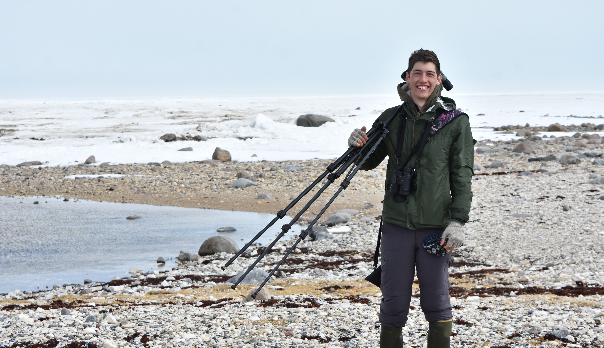

Liam U. Taylor

I'm a second-year Ph.D. candidate (NSF GRFP) in the Department of Ecology and Evolutionary Biology at Yale University. My graduate research (with Dr. Richard Prum) focuses on sexual selection, life history theory, and the evolution of social behaviors in birds. I also have an interest in the anthropology of biology; I'm curious about what biologists mean (and what they think they mean) when they say that something means something. With a background in computer science, I try to pursue complex modeling approaches whenever I can remember how to change the working directory in Python.
Some current research projects include:
- An effort to reground our understanding of delayed plumage maturation with proper life history theory, and following where that theory leads to questions of development and learning in birds with predefinitive plumages
- An attempt to understand the shifting role of agency in natural, sexual, and artificial selection using Peirce's tools of semiotics
- A long-continuing project using object-oriented behavioral models to determine energetic expectations for biparental incubation coordination (and conflict) in Leach's Storm-petrels (Oceanodroma leucorhoa)
- A yearlong project learning which way points down on a micropipette. Along the way, I'm working to highlight microgeographic population structure in the endangered Bluemask Darter (Etheostoma akatulo), and draw species boundaries for the disjunctly distributed Rufous-brown Solitaire (Cichlopsis leucogenys).
Some past fieldwork includes:
- Golden-winged Manakins in the cloud forests of Ecuador
- Semipalmated Plovers in the subartic of Churchill, Manitoba
- Two seasons learning the trade with Storm-petrels on Kent Island, New Brunswick
I'm also an
birder, a
taker-of-bird-photos, and a collector of
hobbies.
This site is entirely
,
which is just to say I'm sorry if you're on mobile, a browser like Safari or Internet Explorer, or pretty much anything that's not this half-screen tab I have open in Chrome on my laptop right now.
CURRENT PRESSING QUESTIONS:
- Do I have dish soap on my hands or did I get dish soap in the dough why does this slice of bread taste like dish soap?
- Why are the PCR gods angriest on the days when I have wronged no one?
- Why do I get looks when I use my mouth to hold a micropipette?
- Does "ePoster" means I can work on it on the flight over?
- How long can I keep using the same no-knead bread recipe for dinners before people start asking questions?
- How humid does it have to be for my knitting to block itself?
- Why hasn't my taxonomy of "bird/good-bird/really-good-bird/truly-good-bird" caught on yet?
- Does anyone ever just purl the whole thing and then flip it inside out?
- Hypothetically, just asking for a friend, how much longer does one have to keep feeding that crow all their moose stew before one starts gaining its trust?